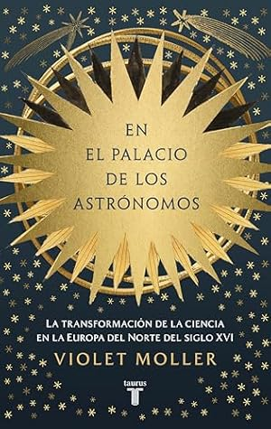

En el palacio de los astrónomos: La transformación de la ciencia en la Europa del norte del siglo XVI (Spanish Edition)
Reseña por Jorge I. Zuluaga

Ver reseña en GoodReads (necesita cuenta)
Este libro, que funciona como la continuación de su obra anterior La ruta del conocimiento, nos lleva de viaje por la Europa al norte de los Alpes en el siglo que antecedió a la revolución científica del siglo XVII y que sucedió al final de la Edad Media donde concluyó su volumen previo. El objetivo es descubrir los personajes, lugares y cortes que sentaron las bases de la astronomía moderna y de la revolución científica de este periodo.
La historia de personajes como Nicolás Copérnico, Johannes Kepler, Tycho Brahe y Galileo Galilei ha sido ampliamente divulgada y es conocida por casi cualquier persona interesada en la astronomía o que, como en mi caso, mantenga una relación profesional con ella. Pero los eventos que rodearon la vida de estos personajes y el desarrollo de sus obras se han contado casi siempre de la misma manera: el foco ha estado casi siempre en sus vicisitudes personales o en la importancia de su obra en el descubrimiento de los secretos del universo. Mucho menos en sus complejas relaciones con contemporáneos o en la forma en la que se preparó el escenario para que sus trabajos revolucionaran nuestra comprensión del cosmos.
Esta es una de las propuestas innovadoras que descubrí en este libro. Por un lado, se cuentan las historias de sitios y personas que sirvieron de «pegamento» para que los talentos de esos grandes individuos pudieran encontrarse y colaborar. Por otro, hay un énfasis muy interesante en los lugares por los que muchos de estos personajes pasaron y cuya ubicación geográfica —o los eventos históricos que allí ocurrieron— terminaron siendo, como relata Moller, decisivos en la revolución científica. Ciudades como Núremberg, Lovaina, Amberes o Praga, que por una u otra razón recordamos asociadas con otros eventos históricos, se convierten aquí en el escenario en el que se gestó la revolución científica de principios de la Edad Moderna.
Me sorprendió sobremanera descubrir al personaje de Guillermo IV de Hesse-Kassel que, según aprendí en este libro, fue quizás el primer gran astrónomo observacional de aquel periodo, antecediendo en un par de décadas al muy admirado y reconocido Tycho Brahe. Todo parece indicar, como relata Moller, que la construcción del famoso Uraniborg en la isla de Hven estuvo primero inspirada por el observatorio que el noble tenía en la ciudad de Kassel, en el centro de Alemania. También me sorprendió saber que algunos de los mecenas de los grandes astrónomos de la modernidad fueron importantes estudiosos de la astronomía. Además de Guillermo IV, el papel de Rodolfo II —el mismo personaje que le da el nombre a las famosas Tablas rudolfinas que elaboró Johannes Kepler con posterioridad— fue particularmente destacado en toda esta historia y a él se dedica en este libro un capítulo completo.
Eché muy en falta las historias sobre Copérnico y lo que pasaba mucho más al noreste de los lugares que están en el foco de la acción de En el palacio de los astrónomos. Entiendo por qué la historia del polaco no sale allí (básicamente porque era un «casa solas», como decimos en Colombia), pero estando su obra en el centro de la discusión de la astronomía de aquel periodo, un aparte sobre su trabajo e influencia es un hueco que le queda al libro.
Me ha gustado mucho el enfoque de género que logra darle la profesora Moller. A diferencia de lo que pasa en la mayoría de los libros sobre este periodo, donde las mujeres —incluso las que no participaron de la ciencia— están completamente desaparecidas, Moller las sitúa en el primer plano. Resalta la contribución que, desde su labor como administradoras, cuidadoras y —obviamente algunas de ellas— como pensadoras y observadoras en la sombra, tuvieron en la revolución científica del siglo XVI. ¡No esperaba menos de la autora y da un gran ejemplo para los autores y las autoras por venir!
Finalmente, quedé muy impactado por el papel que la astrología y la alquimia tenían en aquel tiempo. Obviamente no soy ingenuo y entiendo que lo que hoy damos por sentado como prácticas mágicas, seudocientíficas o adivinatorias, en aquel entonces eran cuerpos de conocimiento de una larga tradición e influencia. Pero reconocer que los personajes más grandes de esta historia practicaban activamente estas formas de conocimiento, especialmente la alquimia, me dejó muy sorprendido.